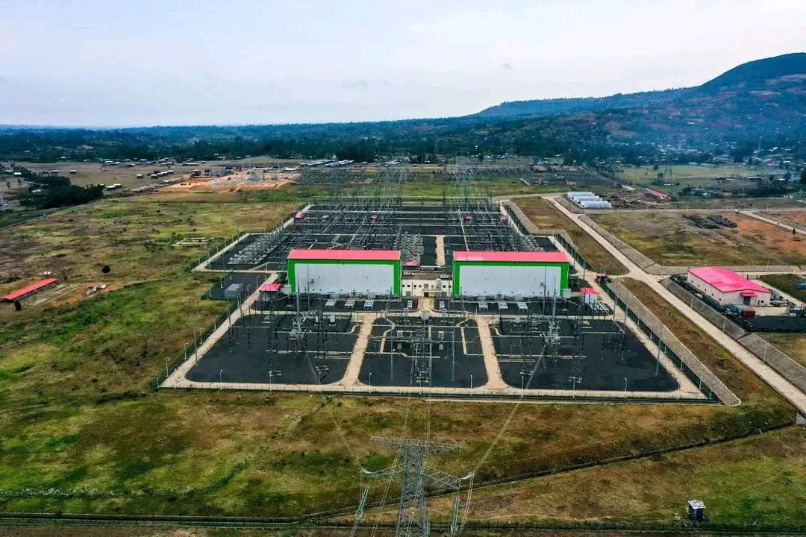
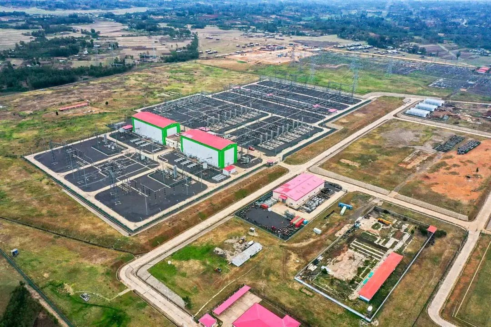

HVDC & FACTS Training Platform
Interactive learning for Advanced power system technologies
1 / 34

HVDC site
2 / 4

HVDC TL
3 / 4

site overview
Interactive learning for Advanced power system technologies
Learn the basic principles of High Voltage Direct Current transmission systems.
Learn the control and protection of LCC type High Voltage Direct Current transmission systems.
Learn the critical things for LCC type High Voltage Direct Current transmission systems.
Learn the effect of FACT devices for HVDC and general grid stability.
Test your understanding with interactive quizzes.
Q1: What is the main advantage of HVDC over HVAC for long distances?
Q2: minimum power flow operation in one pole of Ethiopia-Kenya HVDC link is?